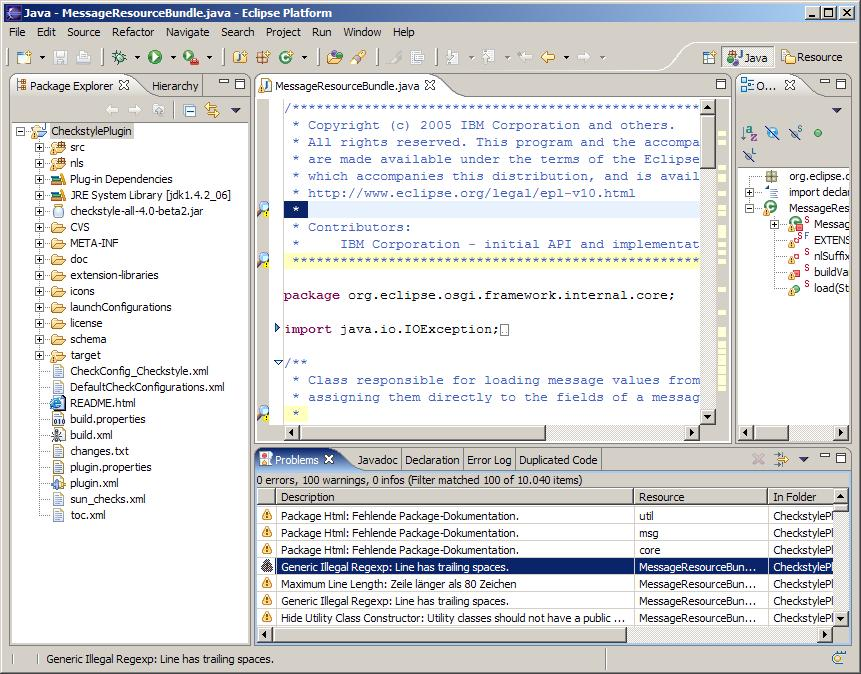
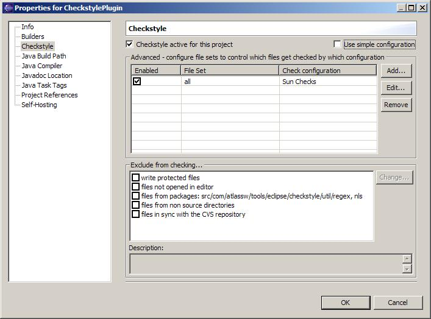
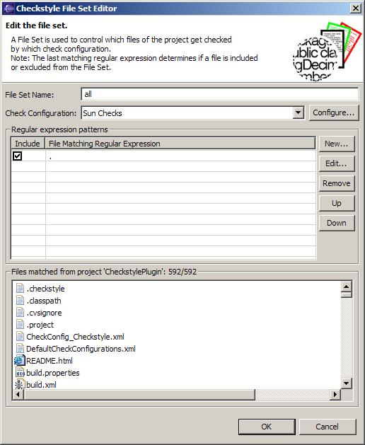
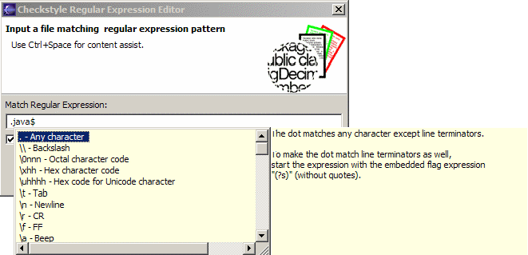
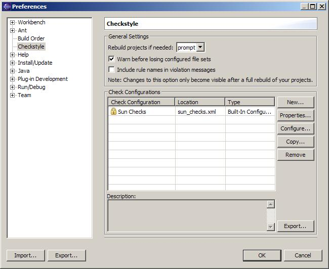
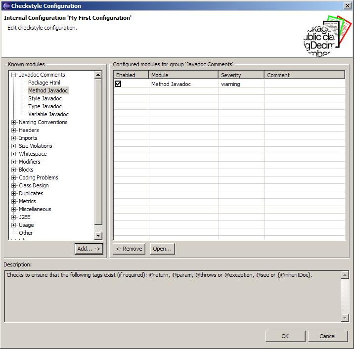
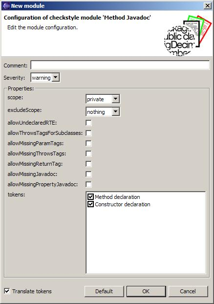

Checkstyle results as markers in the Problems View and as source code annotations

Project Properties Page - Simple Configuration
Project Properties Page - Advanced Configuration with File Sets

File Set Editor with integrated test function

Regular Expression Editor with content assist

Checkstyle Plug-in Preferences Page

Checkstyle Configuration Properties

Checkstyle Configuration Editor

